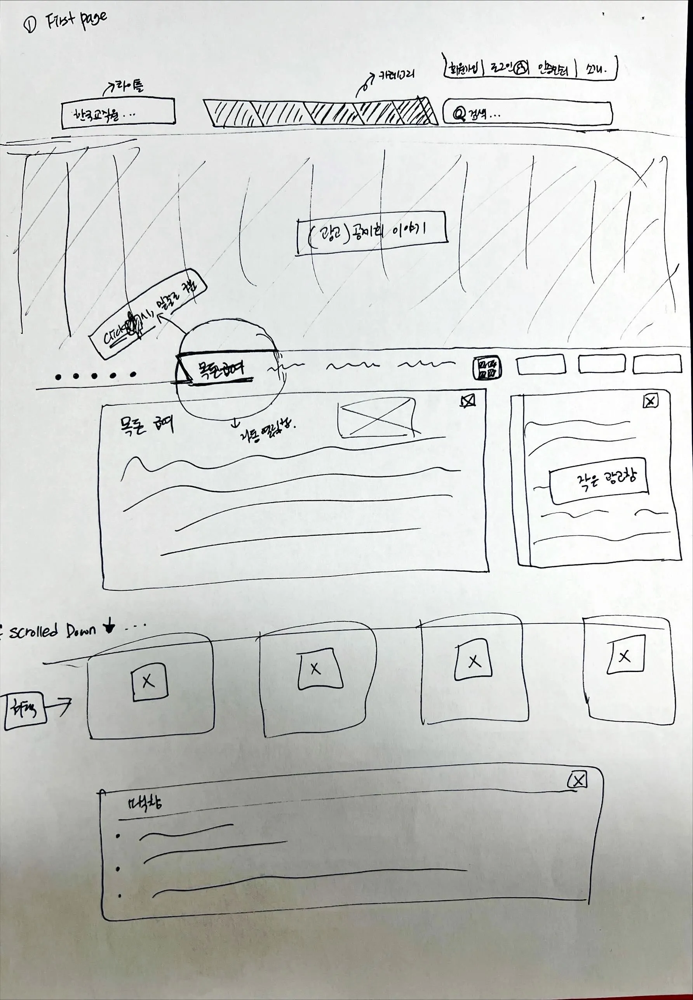

KTCU
A structural deep-dive into how a large institutional site organizes information — rebuilt from scratch to study hierarchy, spacing logic, and interaction accuracy.

The Brief
KTCU Clone was built to understand how large-scale institutional websites structure information and how their UI patterns support clarity and usability. Unlike a redesign, the goal was accuracy — replicating hierarchy, spacing, alignment, grid logic, and interaction patterns (tabs, dropdowns, banners) as faithfully as possible.
Process
-
01Original Site Analysis
- Reviewed layout hierarchy, spacing rhythm, and navigation flow
- Identified key components — tabs, banners, cards
-
02Wireframing
- Recreated the structure in low-fidelity, hand-sketched wireframes
- Mapped grid alignment and documented component behavior for accurate replication

Hand-sketched first-page wireframe — header, category strip, banner carousel, and content cards mapped out before build. -
03UI Structure Rebuild
- Reconstructed the visual hierarchy in clean HTML/CSS with consistent spacing and typography
-
04Development
- Built the full desktop layout in HTML/CSS, implemented interactions in JS/jQuery
- Recreated tab behavior, dropdowns, and banners with consistent cross-browser behavior
-
05QA & Refinement
- Adjusted spacing to match the original more closely, fixed alignment issues, refined interaction timing
Key Decisions
What I Learned
This deepened my understanding of how real-world layout systems are put together, and sharpened my ability to analyze and replicate complex UI structures — plus a lot of debugging practice on spacing and alignment edge cases. It also gave me a much clearer picture of how institutional sites organize large amounts of information for a broad audience.